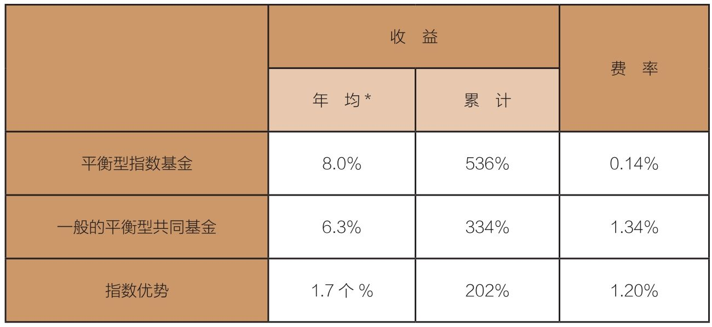
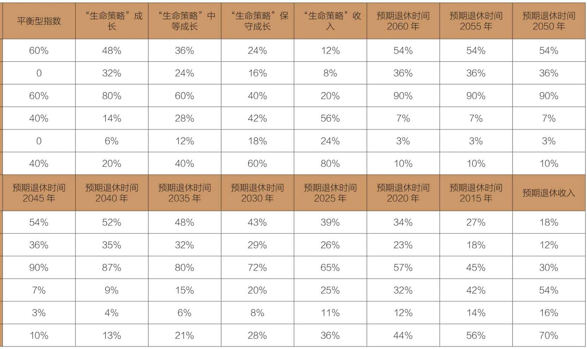
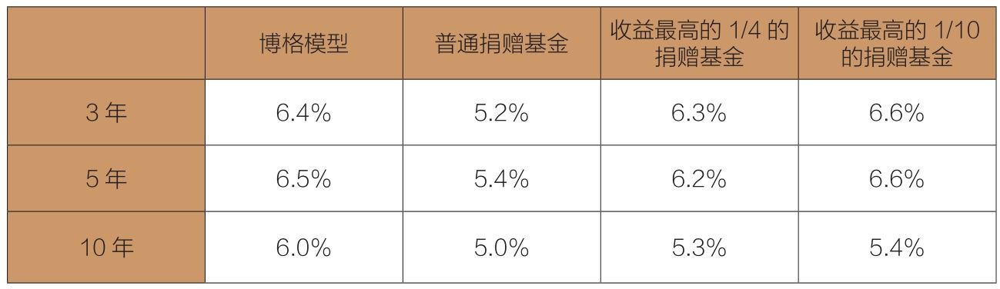

一种简单的主流平衡基金：60%股票和40%债券，为何能在1/4个世纪里持续成功？
在引入复杂、低效、低概率的风格之前，投资已十分困难，何不选择简单、高效、高概率的博格模型呢？
我在1993年写作的《博格谈共同基金》（Bogle on Mutual Funds）一书中，讨论了投资者可以使用的多种资产配置策略，并提出“少即是多”策略的可行性——一种简单的主流平衡基金（如指数），60%美国股票和40%美国债券。这种配置提供了广泛的多样性，并以极低成本经营，使你的所有组合仿佛是由投资咨询公司在管理一般。
1992年，我决定在先锋公司构建一个60%股票和40%债券的平衡指数基金。回顾后来的25年，它仍然极其成功，见表19-1。
表19-1 低成本平衡型指数基金组合和高成本同类型基金对比，1992—2016年

*年收益的回归系数为0.98。
我们看一看这只平衡型指数基金的优异记录。在25年的存续期内，其他同类型基金的年均收益率是6.3%，而这只基金的年均收益率达到8%，年均领先1.7%。这个差额经过复利计算，积累了202%的收益。
这只平衡型指数基金的很大一部分优势来自低成本——仅仅0.14%的费率，而其他平衡型共同基金组合的费率是1.34%。这项费率优势和它的年收益率与其他同类型基金相比的优势具有显著的相关性，相关系数达到0.98（1表示完全相关）。这给了我们足够的理由期望在接下来的年份里，这只平衡型指数基金能再度超越同类。
是的，一位投资者在这段时期里，通过持有一只低成本标准普尔500指数基金能够获得较好的投资结果，年均收益率达到9.3%，而平衡型指数基金的年均收益率则仅为8.1%。从两者的波动性考虑（平衡型指数基金是8.9%，标准普尔500指数是14.3%），风险调整后的收益优势更加明显。但在遭遇困境时，平衡型指数基金可以提供特殊保护。2000—2002年，标准普尔500指数暴跌38%，而平衡型指数基金仅下跌了14%。2008年，标准普尔500指数跌去37%，指数基金仅下跌22%。
如果投资者拥有较长的投资周期、过人的毅力和勇气，且不会被市场的周期性崩盘吓倒，那么他就应该把资产全部（100%）配置到标准普尔500指数基金中。可能在几乎所有的时间里，这都是他的最优选择。（它的优势罕见地保持了近25年，然而，我估计未来这样的预期可能会出现较大的偏差。）
但是如果你时间有限，或者害怕股市波动，一看到“海浪波涛汹涌”就想清算你的股票持仓，那么应用“设计好配置并持有到底”策略，持有60%股票与40%债券的固定比例配置的平衡型指数基金便是一个值得认真考虑的选项。
对于已经退休的投资者，我找不到任何理由支持他违背本杰明·格雷厄姆在多年前给投资者的建议。前面的章节里讲到，基础配置由50%股票和50%债券构成，两项资产的配比可以在75%股票和25%债券到25%股票和75%债券的范围内调整。可以承受较高风险、寻求财富增值的投资者或继承人，可以提升股票的配置比例；风险承受力较弱的投资者，如果愿意牺牲高额收益以换取充分的心灵平静，则可以降低股票的配置比例。
我时常被当作一名倡导者，鼓吹简单又看似严谨的资产配置方案：你的债券比例应该等于你的年龄，其余的资产则应投资于股票。这样的资产配置策略可以很好地满足多数投资者的需求，但这只是仅供参考的经验之谈，便于人们从此开始进行思考。它所基于的理念是，我们年轻时只有有限的资产可以用来投资，不需要资产性收入，对风险有较强的承受能力，相信在长期股票能比债券带来更多收益，因此，我们持有的股票比例应该超过债券。
但当我们年纪大了、退休了，我们中的大多数人应该已积累了一个相当规模的投资组合。这时，我们开始厌恶风险，更愿意牺牲大量的资本增值，也更加依赖过去60年中收益率更高的债券。在这种情况下，我们持有的债券比例应该多于股票。
我根本不想机械地应用这个基于年龄的经验法则。例如，年轻投资者得到第一份全职工作并开始投资时，可以将100%的资产配置到股票，而不是75%。
对于一个百岁老人，股票配置比例为0的策略似乎也不靠谱。随着时间的推移，我们的社会会有越来越多的百岁老人。对于这类投资者，持续卖出股票资产、降低股票资产配置比例可能没有什么意义，尤其是考虑到卖出有增值潜力的股票时还要支付不菲的资本利得及相关税金。
我们应该根据常识来弹性调整与年龄相关的配置计划。有许多研究提供了类似的（更精确，也更复杂的）资产配置策略，但它们经常存在一个共性的缺点：都是基于债券和股票过去的收益，而这一切看起来不会在未来10年里重复发生。
账单可以传递给我更多信息。当我们的年纪越来越大，对赖以为生的人力资本的依赖程度会越来越小，而对投资资本的依赖程度会越来越大。最终，我们退休时最重要的是，保障生活的收入流——我们投资共同基金收到的股利，以及社会养老保险支付的津贴。
是的，我们资本的市场价值非常重要。但经常关注投资的市价不仅不会提高投资的效率，反而会有损效率。我们真正应该关注的是退休后的收入是否稳定。如果有可能，它应该和通胀保持同步增长。
社会养老保险津贴完全符合这个标准，而且其风险有限。一个平衡的共同基金组合能够有效地补充（或被补充）社会养老保险津贴。约有一半的平衡型组合收入来自债券利息，另一半来自股利，且大部分来自大盘股。标准普尔500指数自1926年创立的90年来，股利也在逐年增加（请参考表6-2作出的三点重要解释）。
社会养老保险津贴和指数基金的股利(1)（资本取出时的必要补充）结合，可能会构成用退休资产提供按月收入的有效途径。尽管大多数股票共同基金设置了按月定期支付计划，但仅有极少数股票共同基金会按月支付股利。
股票和债券的股利收益接近历史低位（股票收益为2%，债券收益为3%），再加上共同基金费用的负面作用，主动型共同基金的股利收益就更低了（见第6章）。而如此低的股利收益必然不可能满足多数投资者退休后的收入需求。因此，投资者必须更加严谨地进行规划，筹划构成自己退休收入的所有可行途径：一部分依靠基金派发的股利，而另一部分则要靠定期定额领取的退休津贴。
在过去10年里，获得认可的传统的由债券和股票指数构成的双基金组合模式，很大程度上已被三基金组合模式取代：33%投入债券指数基金，33%投资美国股票指数基金，余下的33%投入非美国股票指数基金。
可以简单地从这样的三基金组合配置中看出，这个全球化组合已被投资顾问和投资者广泛接受。这类组合本质上是建立在囊括全球所有国家股票市场的基础之上的。
在我1993年所著的《共同基金常识》一书中，我建议投资者不要在自己的投资组合里持有非美国股票，在任何情况下都不要配置超过20%的资产到非美国股票上。
我认为，持有美国的股票组合，就可以满足大多数投资者，甚至是每个人的需求。有评论说：“分散化投资组合如果忽略了非美国股票，那么其中被放弃的任何一只标的，难道不就像标准普尔500指数放弃了科技股一样吗？”
我不认同上述这个说法。我们美国人赚取美元、消费美元、储蓄美元，为什么要去承担外汇风险呢？美国的机构不比其他国家更加强大吗？美国公司贡献的收入和利润不是已经有一半来自海外吗？起码美国的GDP不会输给其他发达国家，甚至更高，难道不是如此吗？
不管出于什么原因，我的建议都收到了良好的效果。1993年以来，美国标准普尔500指数的年均收益率高达9.4%（累计707%）。非美国组合——我在这里指的是明晟（MSCI）欧洲、澳洲或远东指数（EAFE）——年均收益率为5.1%（累计216%）。
也就是说，美国股票市场在过去超过25年的时间里都获得了相对优势。现在可能开始反转，非美国股票市场相对较差的业绩在相当长的时期里会更具估值吸引力，但谁真的知道呢？因此，你必须自己考虑这种可能性，并且作出自己的判断。
股票和债券比例固定的平衡型指数基金的目标是，缓解市场变化给投资者配置资产带来的压力。但我稍后给出的（明确的）结论是，设定60%股票和40%债券的平衡型组合或许是投资者寻求风险和收益平衡的最合理比例，但它未必适用于所有投资者。为什么不使用其他比例配置基金呢？
因此，从1994年开始，先锋基金提供了4种“生命策略”基金（见表19-2）——成长型（80%股票）、中等成长型（60%股票）、保守成长型（40%股票）和收入型（20%股票）。每一种基金配置的股票包括60%美国股票和40%非美国股票；每一种基金配置的债券包括70%美国债券和30%非美国债券。
表19-2 各种平衡型基金的资产配置

“生命策略”基金可不是平衡型基金的简单优化。在过去的10年里，投资者对目标日期基金（TDF）的胃口大增。这些基金拥有股票和债券的多样化组合，其资产配置也随着到期日的临近逐渐变得保守，而到期时间通常被设定为投资者的退休日期。
退休目标日期基金是目前最受投资人欢迎的产品，持有近10亿美元的资产。基本上，这种基金的理念，就是随着未来债务融资的需求越来越近，使用债券替换股票。另外，它也适用于其他投资目标，如子女的大学学费。应用简单是目标日期基金流行起来的原因之一，你需要做的只是估计多少年后退休或者你的子女在多少年后上大学，然后选择最接近的目标日期基金。它的理念侧重于“设置然后忘记”。
无论是拥有投资计划并启动投资的投资者，还是希望使用简单的策略规划退休的基金投资者，TDF可能都是一个明智的选择。但随着资产增长，你个人的资产负债表和投资目标将变得越来越复杂，这时，就值得考虑使用专属的低成本股票和债券指数基金搭建你的组合。
如果你选择投资TDF，那么我鼓励你先“看一看幕后的东西”。（这向来是一个好主意！）比较TDF的成本，留意它们的基本构成。很多TDF持有主动型基金，但另一些TDF持有低成本指数基金。
你一定要清楚自己的TDF组合里包含了什么以及你为此支付了多少费用。主要的主动型TDF平均收取0.70%的年费率；指数型TDF收取的年费率是平均0.13%。我相信低成本、基于指数的目标日期基金很可能会是你的最优选择，这已经是老生常谈了。
无论你选择哪种对你最有利的资产配置策略，都应该非常重视社会保险。对多数退休人士来说，这是主要的收入来源之一。事实上，大约93%的美国退休人士会领取社会保险津贴。在拟定资产配置决策时，多数投资者都应该把社会保险视作债券类的资产。
社会保险在你的组合里扮演着十分重要的角色。我举一个实例进行说明。对一个62岁的美国人来说，预期平均剩余寿命约为20年。因此，假设一位62岁的投资者将支取20年的社会保险，另外假定这位投资者的最终年薪是6万美元，并可以每月立即领取1 174美元。如果我们使用当前通胀调整后的国债利率来折现，那么这位投资者的社会保险资本价值大约是27万美元。但是因为这个价值到退休人员去世后就会注销，我们不妨给其一个任意的折扣，比如1/4，如此修订后的价值是20万美元。（稍后，我们回头继续讨论社会保险的议题。）现在，我们假设这位投资者持有一个市值100万美元的共同基金组合，他使用本杰明·格雷厄姆经典的50∶50配置策略。如果忽略社会保险，那么这位投资者将分别在股票和债券上配置50万美元。（不过，我们真的不应该忽略社会保险。）
如果把社会保险的推算价值20万美元加入这位投资者的组合里，总计为120万美元，那么由于加上了额外的社会保险，组合里的债券类资产价值上升到了70万美元，占比58%，而股票占比42%。
为实现真正的50∶50配置策略，这位投资者应该配置60万美元股票和60万美元债券（含40万美元债券和20万美元社会保险）。目标日期基金通常会忽视社会保险收入，导致投资者持有的保守型组合超过他们的预期。TDF可能会忽略社会保险的债券性质，但你不应该忽视。
注意：推迟领取社会保险津贴的做法，实质上提高了你后续收到的月度支付额度，但可能的代价是在过渡期内领不到任何社会保险津贴。请投资者自行权衡这方面的得与失，是选择最终可以领取较高的月度津贴，还是选择减少领取津贴的总体年限。
举例来说，这位投资者年收入为6万美元，从62岁起每月可以领取约1 174美元。如果把领取社会保险津贴的年龄推迟到72岁，那么月领取的津贴额度会增加到1 974美元，显著增加了近70%。
但是由于推迟10年领取社会保险津贴，这位投资者损失了总计14.09万美元的社会保险津贴额度。即便那时他的社会保险津贴更为丰厚，但也要用14年的时间才能弥补损失。
为享受安全舒适的退休生活而积累财富，可能是大多数投资者的投资目标。具有税收优惠的退休储蓄工具，能够使目标的达成更加便利。当你确定要发挥退休账户的优势时，你必须选择最适合自己的一个账户（或者一个组合）。
下面是对在美国可以使用的、不同类型的退休储蓄账户的简单介绍：
固定缴款（DC）计划是许多雇主提供的，允许雇员（投资者）从薪水中划出一部分投入个人退休账户。401（k）是最常见的固定缴款计划，允许你以税前收入为基础，存一部分钱到退休账户中，存储额度通常要和雇主事先协商一个计算公式。你的资产的投资收益会在税收递延的基础上增长，直到退休后支取。通常也会设置一些条款，规定你可以在工作期间遇到经济困难时，申领贷款或提前支取款项。
其他组织的雇员也可以享受类似的计划：403（b）适用于非营利性组织，457计划针对完全非营利性组织、州政府和市政府雇员，节俭储蓄计划（TSP）适用于联邦政府雇员。
传统个人退休账户（IRA）适合任何赚取工薪的人。传统个人退休账户享受的税收优惠与DC计划类似——你缴纳的额度通常会获得税收减免，增值可获得税收递延，直到支取为止。每年的最高缴款额度通常是5 500美元。
简化版雇员个人退休账户（SEP IRA）适用于自由职业者和小企业主。税款政策与传统个人退休账户类似，但最高缴款额度会更高。
罗斯个人退休账户（Roth IRA）的税收政策不同于其他几种退休账户的政策。不对缴款额度进行扣减（全额征税），但退休后支取时是免税的——包括账户里累积的所有资产。不同于DC计划和IRA，罗斯个人退休账户里累积的资产永久免税。罗斯个人退休账户也可以给许多DC计划缴款。
对许多新投资者来说，罗斯个人退休账户可能是一个较好的选择，但拥有传统IRA的投资者需要注意的是，向罗斯个人退休账户转移资金时需要补缴大量税收。这需要事先计算一下。
以当前约3%的债券利率和2%的股利来计算（这两种情况都没考虑主动型基金的高额成本），你的退休组合产生的收入很可能少于你的退休生活所需。
经过简单测算后，建议每年取出（包括收益和资产，每年根据通胀率调整）初始退休金年底净值的4%，但这很可能无法覆盖你退休生活的全部开销。
如同预设的每年4%的取出比例，任何法则在实际应用时都需要变通。如果市场极端低迷，你取出的金额可能超过组合的支付能力，那么要勒紧裤腰带，少取出一点。如果市场好转，你可以支取更多，甚至超出你的需求，那么你可以对这笔意外之财进行再投资，以应对不确定的未来。如此一来，当市场低迷时，你可以减少投资组合的取出比率，并且有机会在市场好转后弥补资本在低迷时的损失。
请允许我再次强调：任何资产配置策略都会面临很多风险，包括股市风险、支付风险、宏观经济风险，以及我们身处的脆弱世界带来的其他风险。我们能做的，就是尽可能作出明智的判断，使我们的资产配置和支取随环境的变化而保持灵活。
现在有很多精致的配置建议可供选择，简单的60∶40平衡型指数基金配置策略的优势仍在，但经常被忽视。但在2017年早些时候，《丰富的常识》的作者本·卡尔森用《投资简化的一课：为什么博格模型能够打败耶鲁模型》一文向这个简单的概念致意，文章转载于《市场观察》。
纳库博基金会每年都会报告超过800所大学捐赠基金的收益情况，涉及5 150亿美元的资产。
卡尔森先生所谓的“博格模型”，是一个包括40%美国股票市场指数基金、20%国际股票指数基金和40%美国债券市场指数基金的组合。下面的表格显示，截至2016年6月30日，博格模型的收益持续超过大学捐赠基金。在整整10年里，博格模型的收益甚至超过了收益最高的1/10的捐赠基金。
博格模型超过大学捐赠基金的收益，截至2016年6月30日

资料来源：纳库博基金会关于捐赠的研究。
(1)见表6-3，主动型基金赚取的大部分（但不是全部）股利收益被征没了。指数基金则没有。